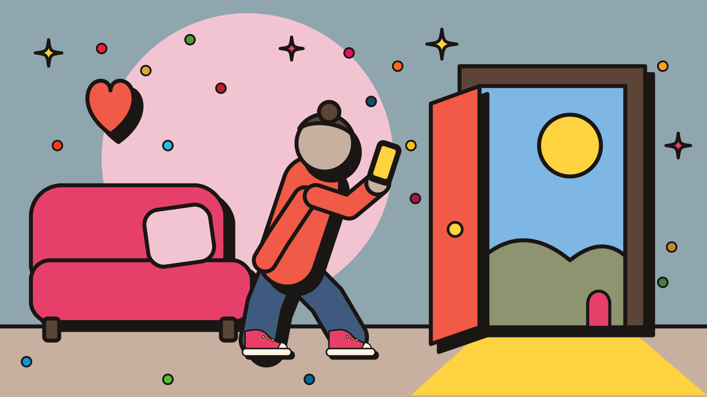
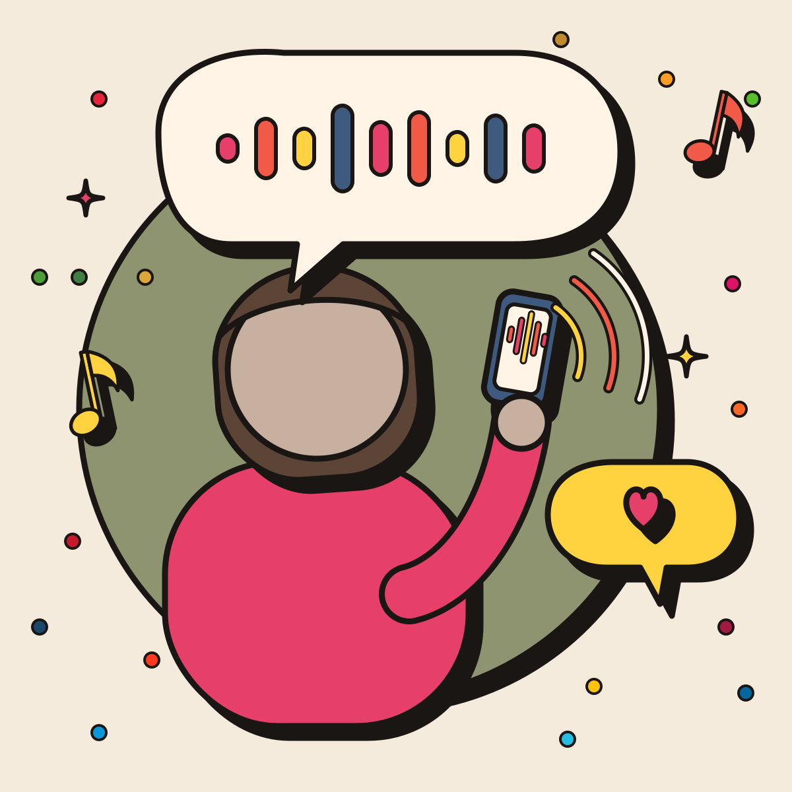
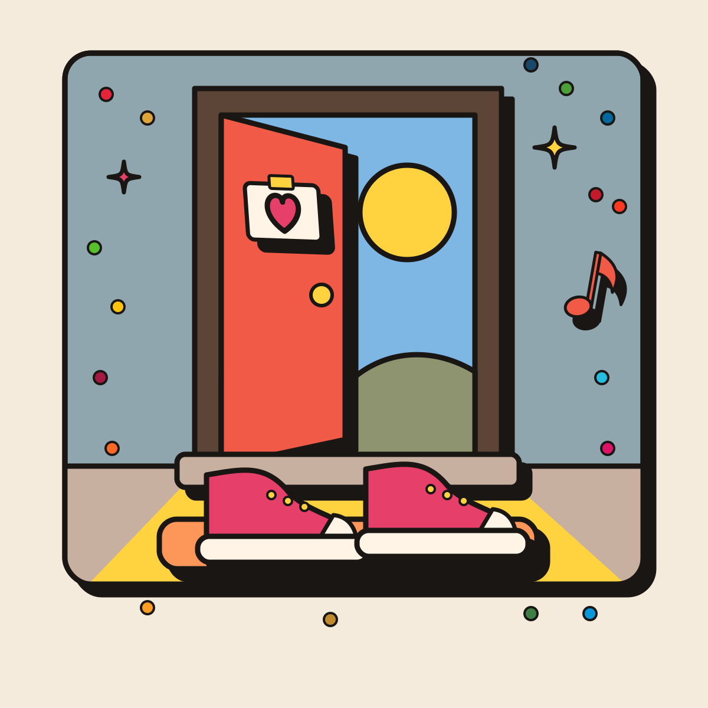

Kom van de bank af
Vertel waar je nieuwsgierig van wordt en wat je kunt. Wij komen met een voorstel dat bij je past, met een eerste stap.
Get off the couch
Tell us what you are curious about and what you can do. We come back with a proposal that fits you, with a first step.

De kern
Vertel wat je kunt en wilt, wij komen met een voorstel.
Je kiest geen thema en geen kaart. Je vertelt waar je nieuwsgierig of boos van wordt, wat je kunt, hoeveel tijd je hebt en wat je aan spullen wilt uitgeven. Daarop formuleren wij een eigen, scherp probleem voor jou, met een eerste stap die je zet met je telefoon, een budget tot 500 euro en je eigen tijd.
Het probleem mag groot zijn. De eerste stap mag klein zijn. Jij kiest wat je ermee doet. Het is vrijblijvend en bedoeld als kennismaking.
The core
Tell us what you can do and want to do. We come back with a proposal.
You do not pick a theme or a card. You tell us what makes you curious or angry, what you can do, how much time you have and what you want to spend on equipment. From that, we shape a problem of your own, sharp and specific, with a first step you can take with your phone, a budget of up to 500 euros and your own time.
The problem can be big. The first step can be small. You decide what to do with it. It is no commitment, and meant as an introduction.
Zo werkt het
- Vertel. Je geeft je interesses, skills, tijd, budget en regio.

- Wij vatten samen. "Dit heb ik gehoord: ... Klopt dat?" Pas als jij ja zegt, gaan we verder.
- Wij formuleren een probleem. We kijken naar 5 tot 8 echte projecten als inspiratie en maken een eigen, scherper probleem voor jou: "In [plek] ontbreekt [wat] voor [groep]."
- Jij krijgt een voorstel met een eerste stap. 1 tot 3 bijdragen die passen bij je telefoon, budget en uren per week. Elke bijdrage heeft een label (bewezen of idee) en bronnen.

- Jij kiest. Je stuurt bij (andere groep, andere plek, groter, kleiner, scherper, maximaal 3 rondes), kopieert het voor jezelf, deelt het met Lennart of doet niets.
How it works
- Tell us. You give your interests, skills, time, budget and region.
- We sum it up. "This is what I heard: ... Is that right?" We only go on when you say yes.
- We shape a problem. We look at 5 to 8 real projects for inspiration and write a sharper problem of your own: "In [place], [what] is missing for [group]."
- You get a proposal with a first step. 1 to 3 contributions that fit your phone, budget and hours per week. Every contribution has a label (proven or idea) and sources.
- You choose. You steer (other group, other place, bigger, smaller, sharper, up to 3 rounds), copy it for yourself, share it with Lennart or do nothing.
Wat je invult
- Interesses: waar word je nieuwsgierig of boos van? Noem 1 tot 3 dingen, in je eigen woorden. Bijvoorbeeld schoon water, vluchtelingen, afval, eenzaamheid.
- Skills: kies maximaal 4 uit 14: camera, filmen, schrijven, vertalen, audio, coachen, ontwerpen, techniek/IT, bouwen/solderen, sensoren/meten, kaarten/mappen, data, netwerken, betalen.
- Tijd: 1, 2 tot 3, 4 tot 6, of 7 uur of meer per week.
- Budget: 0, hooguit 100 of hooguit 500 euro aan spullen.
- Regio: Nederland, Europa, Afrika, Azië, Latijns-Amerika, Midden-Oosten of maakt niet uit. Een land mag, een adres hoeft niet.
Een naam, e-mailadres of adres vragen we niet. Het ontwerp slaat niets op. Hoe dat technisch werkt is nog open.
What you fill in
- Interests: what makes you curious or angry? Name 1 to 3 things, in your own words. For example clean water, refugees, waste, loneliness.
- Skills: pick up to 4 of 14: camera, filming, writing, translating, audio, coaching, design, tech/IT, building/soldering, sensors/measuring, maps/mapping, data, networking, payments.
- Time: 1, 2 to 3, 4 to 6, or 7 or more hours per week.
- Budget: 0, at most 100 or at most 500 euros for equipment.
- Region: the Netherlands, Europe, Africa, Asia, Latin America, the Middle East or no preference. A country is fine, an address is not needed.
We do not ask for a name, email address or address. The design stores nothing. How that works technically is still open.
Van internationaal naar lokaal
Grote initiatieven van de VN, de Wereldbank en de EU gaan vaak over een probleem ver weg of op grote schaal. Wij gebruiken ze als voorbeeld, niet als einddoel.
De assistent laat eerst een of twee echte voorbeelden zien en zegt wat het project volgens de bron doet. Daarna vertaalt de assistent dat naar een lokaal probleem en een kleine bijdrage voor jou. Bij textielafval in Nederland kan dat een kledingruil, repaircafé of inzamelpunt in je eigen buurt zijn. Dat is een voorbeeld uit het ontwerp, geen uitkomst van een proefrun.
Het probleem telt, niet de grootte van de oplossing. Een groot probleem is welkom, ook als jouw stap klein is. Bij je skills zoekt de assistent ook 3 tot 5 bewezen bijdragemechanismen, zoals MapSwipe [4] of Sensor.Community [2].
From international to local
Big initiatives from the UN, the World Bank and the EU are often about a problem far away or on a large scale. We use them as examples, not as the goal.
The assistant first shows one or two real examples and says what the project does according to its source. Then the assistant translates that into a local problem and a small contribution for you. For textile waste in the Netherlands, that could be a clothes swap, a repair café or a collection point in your own neighbourhood. That is an example from the design, not the result of a trial run.
The problem counts, not the size of the solution. A big problem is welcome, even if your step is small. For your skills, the assistant also looks for 3 to 5 proven contribution mechanisms, such as MapSwipe [4] or Sensor.Community [2].
Een uitgewerkt voorbeeld
Dit voorbeeld komt uit het ontwerp. Het is een voorbeelddialoog met echte records uit de database, geen uitkomst van een draaiende app.
Wat de bezoeker invult:
- Interesses: vieze lucht in steden, en afval dat gewoon blijft liggen
- Skills: techniek/IT, sensoren/meten, data
- Tijd: 2 tot 3 uur per week
- Budget: hooguit 100 euro
- Regio: Afrika
Wat de assistent teruggeeft:
- Probleem: In de sloppenwijken van Kampala (Katwe, Kisenyi en Namuwongo) ontbreekt per buurt open meetdata over wat blijvend liggend en verbrand afval met de lucht doet, voor bewoners die luchtwegklachten krijgen.
- Waarom dit bestaat: Van 2.000 ton afval per dag blijft 40% liggen, met verstopte afvoer, vervuild water en luchtwegklachten door verbrand plastic [1]. AirQo meet lucht in Kampala en noemt open verbranding van afval als een van de bronnen van vervuiling [3].
- Aanname: Dat er per buurt te weinig open luchtdata is, weten we niet. Check: de open data van AirQo en de Sensor.Community-kaart [2][3].
- Oplossingsrichting: Eigen, open luchtdata vergelijken met die van AirQo en zo afvalverbranding zichtbaar maken.
- Bijdrage 1 (bewezen mechanisme, idee als koppeling): Bouw het Sensor.Community-meetstation (soldeerwerk, kleine behuizing), meet buiten en deel open data. Vergelijk met de open data van AirQo en schrijf op wat afvalverbranding bij jou doet. 3 uur per week, ongeveer 50 euro (richtprijs op sensor.community). Het meet jouw lucht, niet die van Kampala [2].
- Bijdrage 2 (idee): Zoek via de Sensor.Community-gemeenschap iemand in Kampala die een station wil huisvesten, en lever zelf de bouwinstructie en data-analyse. Dat staat in geen record, dus vraag eerst of er belangstelling is. Alleen doen als zij ja zeggen.
- Wat dit niet oplost: Het afval zelf blijft liggen.
- Status: Concept, alleen zichtbaar voor jou.
Kan het groter, voor meer steden? Dan maakt de assistent het probleem groter: "In Afrikaanse steden ontbreekt open, vergelijkbare data over wat afvalverbranding met de lucht doet." Kampala blijft het enige record dat dit raakt. Voor andere steden is er geen record, dat blijft dus een aanname.
A worked example
This example comes from the design. It is a sample dialogue with real records from the database, not the result of a running app.
What the visitor fills in:
- Interests: dirty air in cities, and waste that just stays where it is
- Skills: tech/IT, sensors/measuring, data
- Time: 2 to 3 hours per week
- Budget: at most 100 euros
- Region: Africa
What the assistant gives back:
- Problem: In the slums of Kampala (Katwe, Kisenyi and Namuwongo), open measurement data per neighbourhood is missing on what uncollected and burned waste does to the air, for residents who get respiratory complaints.
- Why this exists: Of 2,000 tons of waste per day, 40% is left uncollected, with blocked drains, polluted water and respiratory complaints from burned plastic [1]. AirQo measures air in Kampala and names open burning of waste as one of the sources of pollution [3].
- Assumption: We do not know whether open air data per neighbourhood is really lacking. Check: the open data from AirQo and the Sensor.Community map [2][3].
- Direction: Compare your own open air data with AirQo's, and so make waste burning visible.
- Contribution 1 (proven mechanism, idea as the link): Build the Sensor.Community measuring station (some soldering, a small housing), measure outdoors and share open data. Compare it with AirQo's open data and write down what waste burning does where you live. 3 hours per week, about 50 euros (indicative price on sensor.community). It measures your air, not the air in Kampala [2].
- Contribution 2 (idea): Through the Sensor.Community community, find someone in Kampala who wants to host a station, and supply the build instructions and data analysis yourself. This is in no record, so first ask whether there is interest. Only do it if they say yes.
- What this does not solve: The waste itself stays where it is.
- Status: Draft, only visible to you.
Can it be bigger, for more cities? Then the assistant makes the problem bigger: "In African cities, open, comparable data is missing on what waste burning does to the air." Kampala remains the only record that touches this. For other cities there is no record, so that stays an assumption.
Waar de problemen vandaan komen
De database heeft 917 problemen uit publieke bronnen [5][6][7][8][9][10][11] en uit Nederlandse en Europese pagina's (aantal per bron, naar de voorvoegsels van de records):
De problemen zijn alleen inspiratie voor de assistent. Je ziet ze niet als kaarten en je kiest er niet uit. Daarbij horen 581 bijdrage-ideeën: 507 met het label bewezen (het mechanisme, de tool of het programma bestaat en wordt gebruikt, volgens een link) en 74 met het label idee. De koppeling tussen een probleem en een bijdrage is bijna altijd een idee.
Alle 917 problemen zijn voor publieke weergave goedgekeurd, maar uitsluitend als illustratie en inspiratie. Ze zijn niet allemaal nagelezen op actualiteit en sommige beschrijvingen zijn van 2021 tot 2023, dus status en einddatum moeten opnieuw worden gecheckt.
Where the problems come from
The database has 917 problems from public sources [5][6][7][8][9][10][11] and from Dutch and European pages (number per source, by the prefixes of the records):
The problems are only inspiration for the assistant. You do not see them as cards and you do not pick from them. They come with 581 contribution ideas: 507 with the label proven (the mechanism, tool or programme exists and is in use, according to a link) and 74 with the label idea. The link between a problem and a contribution is almost always an idea.
All 917 problems are approved for public display, but only as illustration and inspiration. Not all of them have been checked for being up to date, and some descriptions date from 2021 to 2023, so status and end date need to be checked again.
Wat het niet is
- Geen medisch of juridisch advies.
- Geen plan dat gegarandeerd werkt: een voorstel is een idee, ook als de onderdelen bewezen zijn.
- Geen contact met organisaties: de assistent neemt nooit contact op en doet dat ook niet namens jou. Bij een bijdrage met een organisatie: alleen doen als zij ja zeggen.
- Geen opslag van je profiel en geen vraag naar naam of adres.
- Geen publicatie: wat je krijgt is alleen voor jou zichtbaar. Alleen als je zelf kiest voor "Deel met Lennart", gaat het probleem (zonder je profielgegevens) naar Lennart. Lennart leest het en kijkt of het openbaar mag. Zonder jouw ok gebeurt er niets. We beloven niets over publicatie.
- Geen verzonnen feiten: elke feitelijke zin heeft een bron. Wat niet in een bron staat, heet aanname, met een manier om het te checken.
What it is not
- No medical or legal advice.
- No plan that is guaranteed to work: a proposal is an idea, even when the parts are proven.
- No contact with organisations: the assistant never reaches out, and does not do so on your behalf. For a contribution that involves an organisation: only do it if they say yes.
- No storing of your profile and no question about your name or address.
- No publishing: what you get is only visible to you. Only if you choose "Share with Lennart" does the problem (without your profile details) go to Lennart. Lennart reads it and checks whether it may go public. Without your okay, nothing happens. We promise nothing about publication.
- No invented facts: every factual sentence has a source. What is not in a source is called an assumption, with a way to check it.
Status
- Nu: een ontwerp. Er is nog geen werkende app.
- Waar het draait: nog open. Mogelijkheden zijn een chat in een Page, een webpagina met een kleine server-functie of een Telegram-bot.
- Taalmodel: via een API met sleutel, met een limiet per sessie. Nog niet gekozen.
- Testen: eerst een testset van 10 tot 20 profielen om verzonnen feiten, label-fouten en dode links te vangen, voordat iets openbaar gaat.
- Bekende beperking: dunne dekking bij sommige skills. Audio heeft 4 bijdragen, ontwerpen 3, filmen 3 en betalen 4, tegen data 292 en kaarten 264. De assistent zegt dat eerlijk.
- Links: een deel van de bronlinks is gecontroleerd. unhcr.org geeft onze controle een 403, dat is geen bewijs dat de link dood is.
Status
- Now: a design. There is no working app yet.
- Where it runs: still open. Options are a chat inside a Page, a web page with a small server function, or a Telegram bot.
- Language model: through an API with a key, with a limit per session. Not chosen yet.
- Testing: first a test set of 10 to 20 profiles to catch invented facts, label errors and dead links, before anything goes public.
- Known limit: thin coverage for some skills. Audio has 4 contributions, design 3, filming 3 and payments 4, against data 292 and maps 264. The assistant says so honestly.
- Links: some of the source links have been checked. unhcr.org gives our check a 403, which is no proof that the link is dead.
Bronnen
- GlobalGiving: Read to Learn Foundation, afval in Kampala (Engels). https://www.globalgiving.org/projects/recycle-waste-for-literacy-uganda/
- Sensor.Community: sensoren bouwen (Engels). https://sensor.community/en/sensors/
- AirQo (Engels). https://airqo.net
- MapSwipe: meedoen (Engels). https://mapswipe.org/en/get-involved/
- UN SDG API (Engels). https://unstats.un.org/sdgapi/swagger/
- World Bank projects API (Engels). https://search.worldbank.org/api/v2/projects?format=json&rows=1
- IATI d-portal (Engels). https://d-portal.org/
- UNDP Open (Engels). https://open.undp.org/
- UNHCR IATI-bestand 2025 (Engels). https://files.unhcr.org/en/reporting/unhcr-activities-2025-reloaded.xml
- CORDIS, EU-onderzoeksprojecten (Engels). https://cordis.europa.eu/
- EU LIFE, publieke zoeker (Engels). https://webgate.ec.europa.eu/life/publicWebsite/search
Sources
- GlobalGiving: Read to Learn Foundation, waste in Kampala. https://www.globalgiving.org/projects/recycle-waste-for-literacy-uganda/
- Sensor.Community: building sensors. https://sensor.community/en/sensors/
- AirQo. https://airqo.net
- MapSwipe: get involved. https://mapswipe.org/en/get-involved/
- UN SDG API. https://unstats.un.org/sdgapi/swagger/
- World Bank projects API. https://search.worldbank.org/api/v2/projects?format=json&rows=1
- IATI d-portal. https://d-portal.org/
- UNDP Open. https://open.undp.org/
- UNHCR IATI file 2025. https://files.unhcr.org/en/reporting/unhcr-activities-2025-reloaded.xml
- CORDIS, EU research projects. https://cordis.europa.eu/
- EU LIFE, public search. https://webgate.ec.europa.eu/life/publicWebsite/search